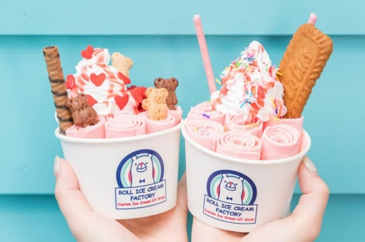

充滿吸引力的大阪，除了探訪擁有歷史文化的大阪城、瘋玩哈利波特的環球影城，大阪還有許多精彩的必遊景點
京都人為衣服而破產，大阪人為美食而破產
大阪飲食文化的特徵之一是口味較為清淡，多使用味道較淡的醬油和日式高湯。大阪市在擁有眾多高級料亭的同時，亦擁有諸如章魚燒、御好燒這樣普及至社會各階層的小吃。
充滿吸引力的大阪，除了探訪擁有歷史文化的大阪城、瘋玩哈利波特的環球影城，大阪還有許多精彩的必遊景點
大阪飲食文化的特徵之一是口味較為清淡，多使用味道較淡的醬油和日式高湯。大阪市在擁有眾多高級料亭的同時，亦擁有諸如章魚燒、御好燒這樣普及至社會各階層的小吃。
大阪環球影城每個年節都會有特定的主題活動，有許多園區與表演、商店以及遊樂設施，是到大阪絕對不能錯過的熱門景點
1.環球影城
2.哈利波特魔法世界

3.紐約區
4.環球奇境
大阪又稱美食的廚房，道頓堀上的店家聚集了來自日本各縣市的經典美食，這裡最出名的拍照景點就是道頓堀榮橋旁的固力果跑跑人與街口會動的大螃蟹招牌，大阪的經典美食串炸、章魚燒、大阪燒在這也有許多經典老店
1.一蘭拉麵
2.たこ梅
3.ROLL ICE CREAM FACTORY

心齋橋身為日本大阪購物的景點之一。從小攤販到百貨公司，不論要找美食、小吃，還是瘋狂購物、採買美妝藥妝，心齋橋絕對是來到大阪不能不去的地方！
1.LOWRYS FARM

2.DHC 心齋橋專賣店
3.PARK East